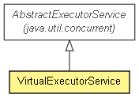

org.jboss.netty.util
类 VirtualExecutorService
java.lang.Object
 java.util.concurrent.AbstractExecutorService
org.jboss.netty.util.VirtualExecutorService
java.util.concurrent.AbstractExecutorService
org.jboss.netty.util.VirtualExecutorService
- 所有已实现的接口：
- java.util.concurrent.Executor, java.util.concurrent.ExecutorService
public class VirtualExecutorService
- extends java.util.concurrent.AbstractExecutorService

可以管理自己终止的委派ExecutorService.
当你想注入一个ExecutorService但又不想在关闭请求时允许明确终止线程时可以使用
VirtualExecutorService.这个对于当ExecutorService
被注入共享给不同组件和这些组件的生命周期依赖注入ExecutorService的终止上特别有用.
ExecutorService globalExecutor = ...;
ExecutorService virtualExecutor = new VirtualExecutorService(globalExecutor);
ChannelFactory factory =
new NioServerSocketChannelFactory(virtualExecutor, virtualExecutor);
...
// ChannelFactory.releaseExternalResources()关闭执行器和打断I/O线程以终止所有I/O任务并释放所有由ChannelFactory获得的资源.
factory.releaseExternalResources();
// 注意globalExecutor并不会关闭,因为VirtualExecutorService实现了自己的终止管理.所有由ChannelFactory获得的线程都通过VirtualExecutorService返回到池中.
assert !globalExecutor.isShutdown();
与源ExecutorService的不同点
关闭请求(shutdown()或shutdownNow())并不会关闭它的父Executor
,而是简单的设置它的内部标识来拒绝此后的执行请求.
shutdownNow()只中断正在通过VirtualExecutorService执行的任务.
awaitTermination(long, TimeUnit)并不等待真的线程终止,而是等待
VirtualExecutorService被关闭和它的活动任务被完成以及线程被返回到父Executor.
| 从类 java.util.concurrent.AbstractExecutorService 继承的方法 |
invokeAll, invokeAll, invokeAny, invokeAny, submit, submit, submit |
| 从类 java.lang.Object 继承的方法 |
equals, getClass, hashCode, notify, notifyAll, toString, wait, wait, wait |
VirtualExecutorService
public VirtualExecutorService(java.util.concurrent.Executor parent)
- 使用指定的
Executor父创建一个新实例.
isShutdown
public boolean isShutdown()
isTerminated
public boolean isTerminated()
shutdown
public void shutdown()
shutdownNow
public java.util.List<java.lang.Runnable> shutdownNow()
awaitTermination
public boolean awaitTermination(long timeout,
java.util.concurrent.TimeUnit unit)
throws java.lang.InterruptedException
- 抛出：
java.lang.InterruptedException
execute
public void execute(java.lang.Runnable command)